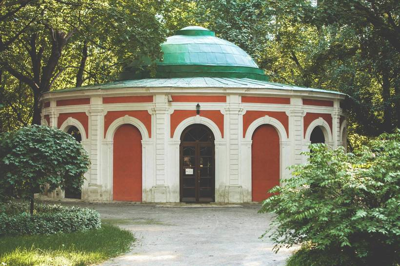

Охотничий домик
===============
### ул. Крымский Вал, д. 9, стр. 29
### Описание
В 2013 году одному из красивейших парков столицы – Нескучному саду исполнилось 170 лет. Он создавался постепенно, на протяжении нескольких десятилетий, и окончательно сложился в 1843 году, когда к его территориям, выкупленным Дворцовым ведомством у известных дворянских фамилий, прибавилась последняя – приобретенная у князя Д.В.Голицына.
Огромную усадьбу Нескучное подарил своей жене Александре Федоровне в день 25-летия свадьбы император Николай I. Ее обширная территория простиралась от Андреевского богадельного дома возле Камер-Коллежского вала, бывшей границы Москвы, до Голицынской больницы, находившейся недалеко от Калужских ворот Земляного города.
Масштабные работы в усадьбе начались в 30-е годы XIX века, когда создавалась существующая ныне структура Нескучного. Их проводил Евграф Дмитриевич Тюрин, известный московский архитектор, за плечами которого к тому времени было создание целого ряда сооружений, имеющих градообразующее значение.
Охотничий домик расположен в верховьях глубокого оврага под названием «Андреевский». В XVIII столетии он относился к загородному ансамблю Нескучная дача, принадлежавшему Никите Юрьевичу Трубецкому, – с дворцом князя, оранжереей, птичником, гостевым домом, различными объектами парковой архитектуры. Создание этого комплекса связывают с именем знаменитого архитектора ХVIII века Д.В.Ухтомского. Охотничий домик первоначально представлял собой открытый парковый павильон, предназначенный исключительно для созерцания «диких картин природы и чудесных видов на Андреевскую слободу и Андреевский монастырь». Геометрический план павильона напоминал аналогичную постройку в Гатчинском парке под Петербургом – Павильон Орла: эллипс под куполом, окруженный со стороны парка галереей, а со стороны оврага — белокаменной смотровой площадкой с тремя небольшими лесенками-спусками.
Первая реконструкция охотничьего домика была проведена в 30-е годы XIX века. На чертежах того времени, выполненных архитекторами Е.Д.Тюриным и И.Л.Мироновским, охотничий домик показан с достаточной ясностью. Также известно, что в конце XIX столетия его реставрацией занимался Н.А.Шохин, и с этого времени здание не претерпевало серьезных изменений, сохраняя первоначальную функцию паркового павильона.
В советский период охотничий домик в составе ЦПКиО им. М.Горького выполнял более прозаическую функцию: в его овальном зале располагалась чайная, в галерее – ее кухня. К 1970-м годам здание пришло в упадок, и по решению московских городских властей дирекция ЦПКиО им. М.Горького в 1979 году заключила договор на проведение проектно-исследовательских и реставрационных работ с институтом «Спецпроектреставрация». В 1982 году памятник было отреставрирован, а
спустя десятилетие распоряжением Правительства Москвы передан Международной ассоциации клубов «Что? Где? когда?» для съемок популярной одноименной телепрограммы.
Ценность последней научной реставрации, завершившейся в 2013 году, в том, что скрупулезно восстановлены фасады и все элементы охотничьего домика на период 1830-х годов. Были произведены демонтаж поздних подоконников и кирпичной кладки в проемах арок, расчистка стен фасадов от поздних слоев цементной штукатурки и масляных красочных слоев, вычинка разрушенных и восстановление утраченных элементов кладки. Отреставрированы также откосы арок, установлены их столярные заполнения, фасады покрашены согласно колерному паспорту. В первоначальный вид приведены белокаменный декор и кровля, устроены водоотвод и отмостка.
В интерьерах произведен демонтаж поздних панелей, обшивок стен и откосов, поздних оконных и дверных заполнений с заменой на новые; проведена реставрация белокаменных полов. Белокаменная смотровая площадка, сама по себе являющаяся ценным
элементом, в процессе работ была воссоздана с сохранением и реставрацией части белокаменных блоков цоколя и плит облицовки. Одновременно с этим проводилось укрепление склонов оврага, вплотную подходящих к ней. Но, поскольку объем этих работ оказался значительно больше предполагаемого, было принято решение провести консервацию площадки с покрытием ее деревянным настилом-подиумом – до выполнения общего благоустройства территории Нескучного сада.
Охотничий домик, единственное сооружение из ансамбля усадьбы Трубецкого, сохранившееся до наших дней, всегда был культовым московским местом. Тут любил гулять Пушкин со своей женой. Очарование здешнего пейзажа вдохновило Тургенева на написание повести «Первая любовь». Сегодня эта территория по-прежнему – в фокусе активности московской жизни.